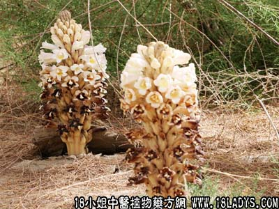

【中药概述】
肉苁蓉为列当科草本植物肉苁蓉的肉质茎。甘、咸、温。归肾、大肠经。
1．补肾助阳：用于肾阳不足的阳痿早泄、女子不孕、筋骨痿弱、腰膝冷痛等，常配熟地、菟丝子、杜仲、山药、巴戟天、淫羊藿等，如（<证治准绳>肉苁蓉丸）、（<圣惠方>肉苁蓉丸）。
2．润肠通便：用于精血不足的肠燥便秘等，常配熟地、桃仁、火麻仁等，如（润肠丸）。
【药效鉴别】
肉苁蓉其性更润，兼有益精血、润肠燥之功，可用于阴血亏虚之肠燥便秘。
【药理作用】
有降低血压，促进唾液分泌及呼吸麻痹作用。
【化学成分】
含有微量生物碱，并发现有结晶性中性物质。
【用量用法】
本品10——20g，水煎服。
【使用注意】
肉苁蓉补阳不燥，药力和缓，入药少则不效，故用量宜大。阴虚火旺，大便泄泻及实热便秘者不宜。
酒制大芸：甘辛、咸，温。归肝、肾、大肠经。增强温补之性。用治阳痿，腰痛，不孕。
【注】
肉苁蓉不同于苁蓉。苁蓉为列当科苁蓉的肉质茎。两药别名均称“地精”。